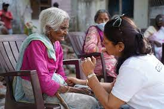

The organization’s programs are focused on direct interventions in the areas of Healthcare (mobile healthcare units, cataract surgeries), Agecare (helplines, senior citizen care homes and day care centres, physiotherapy), Livelihoods (elder-self-help groups; linkages with government schemes), Disaster Response (e.g. covid19 relief response), as well as Advocacy and Awareness on rights and policies relating to elders. All donations to HelpAge India are eligible for 50% tax exemption under section 80G of the Income Tax Act, 1961.
.jpg) Cataract is one the major causes of blindness in India. 12.5 million people are blind & cannot afford treatment. HelpAge conducts more than 35,000 cataract eye surgeries in 15 states. Credible and competent eye hospitals and organizations carry out surgeries with HelpAge India’s support. All surgeries under the program are performed only in base hospitals and not in make-shift camps. Since 1980, this program has benefitted more than 9 lakh elders, not just restoring their sight but enabling them to go back to work and live a life of dignity.
Cataract is one the major causes of blindness in India. 12.5 million people are blind & cannot afford treatment. HelpAge conducts more than 35,000 cataract eye surgeries in 15 states. Credible and competent eye hospitals and organizations carry out surgeries with HelpAge India’s support. All surgeries under the program are performed only in base hospitals and not in make-shift camps. Since 1980, this program has benefitted more than 9 lakh elders, not just restoring their sight but enabling them to go back to work and live a life of dignity.

A roof over their heads is a critical need of the elder who are destitute, sick and abandoned by family and those uprooted by disasters. HelpAge India has established model homes for the senior citizens and aged in places such as Patiala & Gurdaspur in Punjab, Cuddalore in Tamil Nadu and Kolkata in West Bengal. HelpAge supports 300 old age homes and runs 5 barrier homes for the aged in India.Keeping in mind the vulnerability of elders & our Corona warriors on ground, in the current Covid 19 pandemic situation, HelpAge India is adhering to all the safety and hygiene measures for all its programs on the field, like wearing face masks, regular washing & sanitization of hands, and maintaining social distancing norms at all times, to ensure their safety & protection.